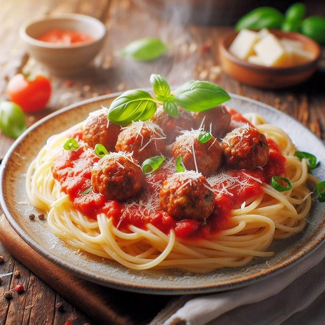

- Die Spaghetti nach Packungsanweisung in reichlich Salzwasser al dente kochen. Abgießen und warm halten.
- In einer großen Schüssel das Hackfleisch mit Zwiebel, Knoblauch, Ei, Paniermehl, Paprikapulver, und Oregano vermengen. Mit Salz und Pfeffer würzen.
- Aus der Mischung kleine Fleischbällchen formen.
- In einer Pfanne etwas Olivenöl erhitzen und die Fleischbällchen darin rundherum anbraten, bis sie gut durchgegart und goldbraun sind. Herausnehmen und beiseite stellen.
- Im gleichen Öl das Tomatenmark anbraten, dann die Tomatenstücke hinzufügen. Mit Salz, Pfeffer und weiteren Kräutern abschmecken.
- Die Fleischbällchen in die Tomatensauce geben und bei niedriger Hitze 10 Minuten köcheln lassen.
- Die gekochten Spaghetti in die Sauce geben oder die Sauce über die Spaghetti servieren.
- Nach Belieben mit frischem Basilikum oder Parmesan bestreuen und genießen!
Spaghetti mit Fleischbällchen
90 Min
Mittel
11.08.2024
| 80 g | Pasta |
| 100 g | Rinderhackfleisch |
| 1 EL | Paniermehl |
| 1 Stück | Eier |
| 1 Stück | Zwiebeln |
| 1 Stück | Knoblauch |
| 1 EL | Olivenöl |
| 3 TL | Ital. Kräuter |
| 400ml | Passierte Tomaten |
| Salz, Pfeffer (nach Belieben) |
Zubereitung
Vorbereitung ca. 30 Min
Kochzeit ca. 90 Min
Jens Albers